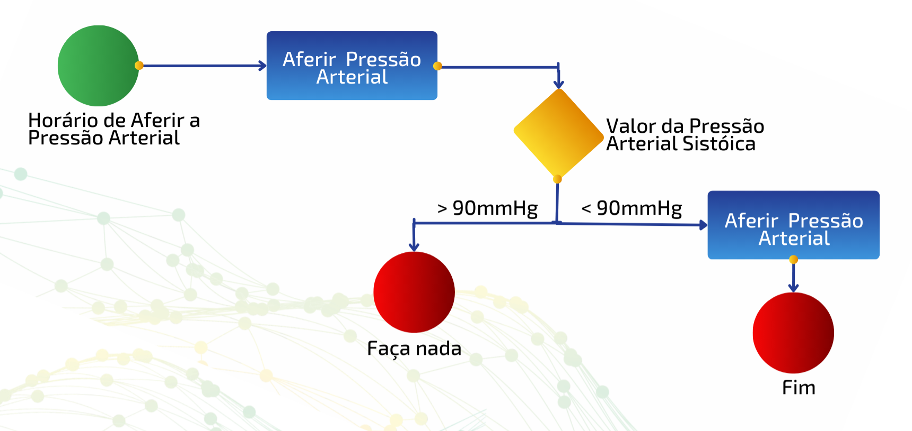

Módulo I - Unidade 1: Introdução à Modelagem da Informação em Saúde
|
a) Apresentação do Curso (Plano de Ensino); b) Introdução e conceitos fundamentais sobre modelos de informação; c) Formas de representar as informações, justificativas e suas aplicações; d) Saiba mais. |
Nesta Unidade, você terá a oportunidade de explorar os conceitos fundamentais sobre a modelagem da informação em saúde.
Fonte: Elimu Informatics(2023).
Introdução
A nossa Constituição Federal de 1988 (CF/88) (Brasil, 1988) nos diz que "as ações e serviços públicos de saúde [...] constituem um sistema único" e, por aqui, não estamos falando de um sistema de informação. O sistema, na concepção adotada na CF/88 (Brasil, 1988), vem da Teoria Geral dos Sistemas (TGS) e, assim como em qualquer outro sistema de saúde, trata-se de um conjunto de elementos interdependentes que formam um todo organizado com objetivos específicos.
Não confunda sistema, no conceito adotado na TGS, com Sistemas de Informação (SIS), que são, essencialmente, meios cibernéticos para tentar representar instantes de interações de sistemas.
➔ Sistema na TGS: é um conjunto interconectado de elementos que “trabalham” juntos para alcançar um objetivo comum em diversos campos do conhecimento.
➔ Sistemas de Informação (SIS): são estruturas organizacionais ou técnicas projetadas para coletar, processar e distribuir informações para apoiar operações e tomada de decisões em organizações.
E qual é o objetivo específico de um sistema de saúde? Há várias análises possíveis e dependem do objetivo do legislador. Em primeiro lugar, poderíamos dizer "salvar vidas" (um erro comum ao falar do Sistema Único de Saúde [SUS]) ou associar à "qualidade de vida" (um erro mais sofisticado). Mas nosso legislador, nesse caso, constituinte, ao tratar do SUS, foi muito claro ao definir como objetivos a "redução do risco de doença e de outros agravos e ao acesso universal e igualitário às ações e serviços para sua promoção, proteção e recuperação" (Brasil, 1990). Ou seja, em ordem máxima, estamos falando de "evitar que as pessoas adoeçam" e, em segunda ordem, de acesso universal ao sistema de saúde que as protejam e as recuperem.
Ora, complexa tarefa - e todos sabemos disso. Então, ainda dentro da TGS, podemos definir o SUS como um sistema complexo, dados os incontáveis elementos e inúmeras interações possíveis e imagináveis para que esse sistema funcione.
Então, apoiar-se em informações e em sistemas de informação cibernéticos é minimamente essencial para se coordenar esse sistema de saúde complexo e evitar que colapse em caos - ou que, ao colapsar, do caos, surja a ordem!
Desde os primórdios da saúde pública brasileira, mesmo antes da instituição do SUS, o sistema de saúde vigente à época se baseava em uso de informação e algum tipo de tecnologia que, claro, evoluiu conforme as inovações tecnológicas foram acontecendo. Na linha do tempo a seguir, é possível comparar o momento vivido pelo sistema de saúde e como os SIS evoluíram.
Fonte: autoria própria.
Atualmente, o termo "Saúde Digital", definido no Brasil como "o uso de recursos de Tecnologia de Informação e Comunicação (TIC) para produzir e disponibilizar informações confiáveis sobre o estado de saúde para cidadãos, profissionais de saúde e gestores públicos" (Brasil, 2023), determina o conjunto de esforços para se utilizar da cibernética em prol do sistema de saúde, inclusive para representar instantes de suas interações. Representar instantes de interações do sistema de saúde é exatamente o que iremos abordar neste Curso.
A saúde é um bem precioso que depende diretamente da disponibilidade e do acesso à informação confiável e segura. Porém, na maioria das vezes, o conjunto de informação relevante relacionado ao histórico de saúde do(a) cidadão(ã) não o acompanha de forma automática. Para garantir um cuidado adequado, é essencial que essa informação seja devidamente compartilhada entre profissionais de saúde, estabelecimentos de saúde, sistemas de registro eletrônico em saúde e cidadãos(ãs).
Fonte: autoria própria.
A transferência de informações de saúde, tais como históricos clínicos, vacinas, sumários de alta, resultados de exames, dentre outros, desempenha um papel fundamental no apoio à tomada de decisões clínicas informadas, no diagnóstico preciso, no tratamento eficaz, na gestão em saúde efetiva etc.
Como podemos garantir que a informação de saúde seja transferida de forma eficiente e segura, promovendo assim um cuidado clínico mais informado e preciso?
Saiba mais ...
- Health Information Exchange | SpringerLink (Braunstein, 2018)
- SMART on FHIR: a standards-based, interoperable apps platform for electronic health records - PMC (Mandel et al., 2016)
- Integrated displays to improve chronic disease management in ambulatory care: A SMART on FHIR application informed by mixed-methods user testing - PMC (Curran et al., 2020)
A abstração como resposta
"O Caso de Ana", produzido pela Fundação Oswaldo Cruz (Fiocruz) (Baptista; Machado; Lima, 2009) para o Curso de Qualificação de Gestores do SUS, é um caso fictício, mas que poderia ilustrar outros tantos casos reais relacionados aos desafios de fluxo no SUS.
Para baixar o PDF sobre “O Caso de Ana”, clique neste link. Se preferir, assista ao vídeo relacionado a essa situação-problema clicando aqui.
Fonte: Microcurso 2 - "Rede Nacional de Dados em Saúde: o Que Precisamos Saber?" (2. ed.) do Programa Educacional em Saúde Digital da UFG (Santos et al., 2022).
Faça a leitura de “O Caso de Ana” e reflita sobre sua trajetória. Como a Saúde Digital poderia ter dado um desfecho diferente à Ana? Elabore um fluxograma (à mão ou em qualquer ferramenta que prefira utilizar) demonstrando como a tecnologia poderia ter apoiado o cuidado de Ana. Não se preocupe em especificar quais dados poderiam ser utilizados, apenas quais tecnologias ofertadas (aplicativo para o cidadão, aplicativo para o profissional, prontuário do cidadão etc.) e qual interação seria representada (resultado de exame, resumo da consulta etc.).
Em seguida, assista ao Vídeo, clicando neste link, o qual apresenta o “Caso de Ana” com a incorporação da Rede Nacional de Dados em Saúde (RNDS).

Fonte: Microcurso 2 - "Rede Nacional de Dados em Saúde: o Que Precisamos Saber?" (2. ed.) do Programa Educacional em Saúde Digital da UFG (Santos et al., 2022).
Aqui, começamos a pensar em como modelar informações… Não existe uma fórmula mágica! Cada cenário vai demandar um conjunto de abstrações, saberes e "cuidados" específicos.
Você ficou consternado(a) com “O Caso de Ana”? O(A) designer de informações em saúde precisa ter a sensibilidade de compreender como mudar um cenário desfavorável, apoiado em TIC, e conseguir abstrair, em forma de dados, o fluxo e as informações necessárias para representar o problema abordado.
Embora não exista uma fórmula mágica, também não é com magia que se realiza essa tarefa, mas com ciência. Existem métodos e práticas provenientes da administração, da computação, das ciências sociais, das ciências da saúde e de outras ciências utilizadas tanto para se mapear processos quanto para representar informações.
Embora não seja da prática habitual dos(as) profissionais das ciências da saúde mapear processos ou desenhar algoritmos (ainda que em linguagem natural), a instrução "se a pressão arterial sistólica estiver abaixo de 90 milímetros de mercúrio, medique o paciente" é algo natural.
Perceba que, se abstrairmos, podemos representar:
- a) um fluxo/algoritmo de decisão e
- b) informações em saúde.
Imagine, agora, que essa instrução acontece no contexto de um(a) paciente internado(a) em um hospital. Vejamos como esse fluxo poderia ser abstraído na forma de uma notação BPMN (Business Process Model and Notation):
Fonte: autoria própria.
Ou poderíamos abstrair na forma de um algoritmo em Portugol:
Se (Hora de Aferir Pressão Arterial = Verdadeiro){
Afira a Pressão Arterial;
Anote os Valores da Pressão Arterial;
}
Se (Pressão Arterial Sistólica < 90mmHg){
Medique o Paciente;
}
Fonte: autoria própria.
E como informação gerada nesse "instante" poderíamos ter:
Paciente: Fulano de Tal
Data:23/10/2023
Hora: 13:45
Procedimento: Aferição de pressão arterial
Local: Braço esquerdo
Posição: Sentado
Equipamento: Esfigmomanômetro de pedestal
Resultado: 130x90 mmHg
Fonte: autoria própria.
Nesse cenário, dado que a pressão arterial sistólica seja superior a 90 mmHg, que é representada por um valor de 130, não seria necessário medicar o(a) paciente. Esse processo de abstração, que envolve a representação de dados a serem coletados em momentos específicos de um evento, é o que denominamos de definição de um Modelo de Informação ou "modelar a infomação".
No exemplo acima, uma modelagem em formato livre poderia ser especificada da seguinte forma:
| Campo | Formato | Obrigatório? | Pode repetir | Limitações? |
| Cidadão(ã) | Texto | Sim | Não | Não se aplica (N/A) |
| Data | DD/MM/AAAA | Sim | Não | Deve ser igual à data atual do sistema. |
| Hora | hh:mm:ss | Sim | Não | Deve utilizar formato 24h. Os segundos são opcionais. |
| Procedimento | Terminologia | Sim | Sim | Validar a terminologia na Tabela X. |
| Local | Terminologia | Sim | Sim | Validar a terminologia na Tabela Y. |
| Posição | Texto | Sim | Sim | N/A |
| Equipamento | Texto | Sim | Sim | N/A |
| Resultado | xxx/yyy mmHg | Sim | Sim | O valor de xxx deve ser maior que o valor de yyy. |
Fonte: autoria própria.
Um modelo de informação não precisa ser, necessariamente, adotado em um sistema de informação cibernético. No exemplo anterior, seria totalmente possível escrever em um papel em branco os dados que se espera receber do modelo.
O modelo de informação especifica exatamente o que deve ser escrito, enquanto que os dados escritos representam, de fato, a informação no instante que foi coletada.
Em HL7 FHIR, o modelo de informação é o que chamamos de recurso e perfil, ou seja, a definição do que deverá ser escrito/registrado, enquanto que os dados representados de acordo com essas definições, formando a instância, é a representação concreta dos dados em um determinado contexto (ou seja, "o papel com os dados escritos").
No exemplo anterior, qual é o problema principal de representação?
Dica: examine cuidadosamente a forma como o resultado está representado. Qual seria a abordagem mais adequada para representar a pressão arterial?